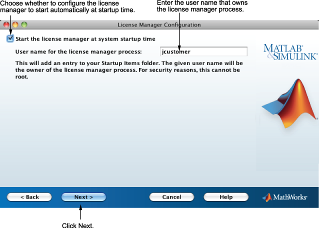

Configure the License Manager
You configure the license manager in different ways, depending on which platform you are installing:
Windows
Configuring the license manager service provides automatic startup at system boot time and centralizes administration of the license manager through the Windows Services control panel. To review the default license manager configuration settings, click View Default Settings. If you choose not to configure the license manager service, you can do it later.
Note: If you have an existing license manager that you want to continue to use until you install the new one, select the Do NOT configure license manager as a service (files will still be installed) option. The installer still installs the license manager files. After installation, you can stop your existing license manager and start your new license manager. |

Linux
To add an entry for the license manager to your system Startup Items folder, leave the option selected and click Next. Specify the user name that will own the license manager process. For security reasons, this name cannot be root.
